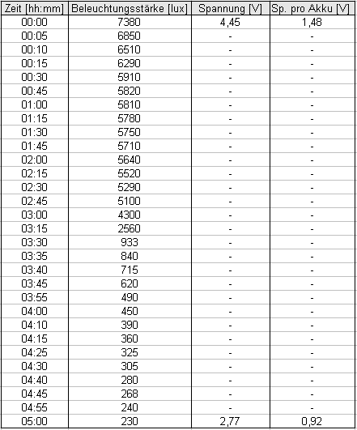
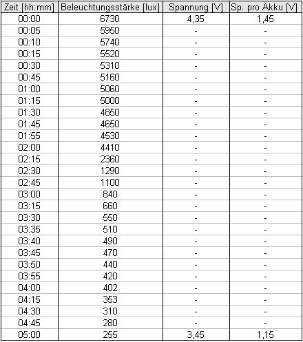
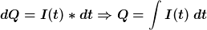

| Themen und Tipps |
| Allgemeines |
| Elektrizität |
| Heizung & Sanitär |
| Mobilität |
| Fakten: Energie |
| Fakten: Klima |
| Fakten: Umwelt |
Test: Eneloop Akkus von Sanyo
Jeder war bestimmt bereits in der folgenden oder ähnlichen Situation: Die selten genutzte Digitalkamera wird für einen Urlaub benötigt. Die notwendigen Akkus wurden bereits Wochen zuvor geladen. Es geht auf die Reise, es werden ein paar schöne Fotos geschossen, doch plötzlich erscheint der Hinweis „battery low“ auf dem Display der Kamera. Ein paar Fotos später fährt das Objektiv ein und die Kamera schaltet sich ab. Und dies obwohl die Akkus zuvor komplett geladen wurden.
Der Anwender fragt sich zu Recht, weshalb die Akkus so früh ihren Dienst versagt haben.
Sowohl Akkus als auch Batterien haben die Eigenschaft, dass sie im Laufe der Zeit einen Teil ihrer Ladung verlieren, die sogenannte Selbstentladung.
Dies liegt zum einen an internen chemischen Nebenreaktionen, bei welchen elektrochemisches Material verbraucht wird.
Zum anderen kann es kleine interne Kurzschlüsse geben, da die Materialien in Kathode
und Anode nur durch eine sehr dünne Separationschicht voneinander getrennt sind - im Kurzschlussfall können diese Materialen
direkt miteinander reagieren.
Der Effekt der Selbstentladung ist bei Akkus viel stärker als bei Batterien ausgeprägt.
Werden nun Akkus geladen und liegen mehrere Wochen ungenutzt bereit, so sind sie nur noch scheinbar voll – denn ein Teil der Ladung ist ja bereits durch die Selbstentladung verloren gegangen.
Hier setzt die Firma Sanyo an, indem sie Akkus konstruiert hat, die eine viel geringere Selbstentladung besitzen als bisherige Energiespeicher. Sie vereint somit die positiven Eigenschaften von herkömmlichen Batterien und Akkus: Wiederaufladbarkeit von Akkus und niedrige Selbstentladung von Batterien.
Wie sich die Akkus im Alltag schlagen, werde ich im folgenden testen.
Hierzu bekam ich von der Firma Sanyo freundlicherweise 4 Mignon (AA) und 4 Micro(AA) Akkus zur Verfügung gestellt. Vielen Dank an dieser Stelle!
Als ich die Akkus erhielt, fiel mir zuerst die edle Verpackung auf: Eine Blisterverpackung, die mit blauen Folien beklebt war. Auf der Vorderseite stand nur das wichtigste:
Ready to use rechargeable battery
AA 4PACK
Sanyo
Auf der Verpackungs-Rückseite findet man weitere Informationen wie Herstelleradresse, Barcode und die mögliche Kapazität der Akkus.
Letztere Angabe beträgt 2000mAh bei den Mignon (AA) Akkus und 800mAh bei Micro (AAA).
Zwar gibt es neuerdings Akkus die mit mehr Amperestunden (Ah) locken, doch diese versprochenen hohen Kapazitäten bringen recht wenig, wenn die Akkus nicht unmittelbar nach dem Ladevorgang genutzt oder über einen längerem Zeitraum benötigt werden.
Interessant ist auch, dass die Akkus in wiederverschließbaren Innenverpackungen ausgeliefert werden. Darin können die Akkus bei Nichtnutzung gelagert oder auch transportiert werden.
In den Tests werde ich unter anderem darauf eingehen, wie sich die Akkus in verschiedenen Geräten verhalten, wie hoch die Selbstentladung im Laufe der Zeit gegenüber vergleichbaren Akkus ist und wieviel nutzbare Ladung sie wirklich beinhalten.
Test 1 - Überprüfung des Ladezustands der Akkus
Sanyo gibt an, dass die Akkus zu etwa 75% vorgeladen seien und so direkt einsatzbereit sind.In der Tat, die Spannung der Akkus beträgt jeweils über 1,350 Volt.
Zudem bietet mein Ladegerät Ansmann Energy 8 das Feature, den Ladezustand von Akkus grob zu bestimmen. Leuchtet beim einlegen der Akkus die Lampe grün, so sind die eingelegten Akkus über 80% geladen.
Erfreulicherweise leuchteten bei allen Eneloop-Akkus die LEDs grün, also zu mindestens 80% geladen!
Die Herstellerangabe wurde also eingehalten, Test bestanden.
Test 2 - Vergleich von Selbstentladungen (läuft derzeit)
Für diesen Test wurden 4 Akkus, davon 1 Eneloop AAA, 1 Eneloop AA und zu Vergleichszwecken 1 Tronic AAA (800mAh) und 1 Tronic AA (2100mAh) in einem Ladegerät (Ansmann Energy 8) komplett geladen.Danach wurden die Akkus auf einen Tisch gelegt und sich selbst überlassen.
Von Zeit zu Zeit wurde die Akkuspannung mit einem Multimeter gemessen. Hierbei wurde darauf geachtet, dass der Messvorgang möglichst kurz ist, damit sich die Akkuspannung während des Messvorganges durch den Messstrom nicht verändert. Desweiteren wurden an einem Messtag alle 4 Akkus um ca. 19 Uhr unmittelbar hintereinander gemessen, um faire Vergleichswerte zu erhalten.
| Datum | Eneloop AA | Tronic AA | Eneloop AAA | Tronic AAA |
| 3. Jan | 1,486 | 1,470 | 1,470 | 1,463 |
| 7. Jan | 1,412 | 1,382 | 1,379 | 1,375 |
| 10. Jan | 1,403 | 1,369 | 1,370 | 1,367 |
| 13. Jan | 1,396 | 1,359 | 1,362 | 1,358 |
| 18. Jan | 1,387 | 1,342 | 1,352 | 1,346 |
| 27. Jan | 1,382 | 1,333 | 1,350 | 1,340 |
| 3. Feb | 1,377 | 1,324 | 1,346 | 1,330 |
| 10. Feb | 1,375 | 1,317 | 1,344 | 1,328 |
| 18. Feb | 1,372 | 1,314 | 1,342 | 1,325 |
| 24. Feb | 1,369 | 1,310 | 1,339 | 1,323 |
| 3. März | 1,367 | 1,307 | 1,338 | 1,318 |
| 10. März | 1,366 | 1,304 | 1,337 | 1,314 |
| 17. März | 1,364 | 1,302 | 1,335 | 1,312 |
| 24. März | 1,361 | 1,294 | 1,333 | 1,307 |
| 31. März | 1,360 | 1,292 | 1,332 | 1,305 |
| 7. April | 1,357 | 1,292 | 1,332 | 1,305 |
| 14. April | 1,356 | 1,291 | 1,330 | 1,304 |
| 21. April | 1,357 | 1,290 | 1,330 | 1,302 |
| 28. April | 1,357 | 1,286 | 1,331 | 1,301 |
| 5. Mai | 1,352 | 1,285 | 1,327 | 1,295 |
| 12. Mai | 1,350 | 1,284 | 1,326 | 1,293 |
| 19. Mai | 1,350 | 1,284 | 1,325 | 1,296 |
Die Messungen erfolgen immer einmal pro Woche. Dieser Test ist zeitlich nicht begrenzt, es wird sich in dessen Verlauf zeigen, wann weitere Messungen nicht mehr notwendig sein werden.
Bisherige Werte als Kurve anzeigen!
Test 3 - Akku-Laufzeiten in einer Taschenlampe
In diesem Test treten die Tronic Akkus gegen die Eneloop an. Eine Taschenlampe wird mit einer der beiden Akkutypen bestückt und per Helligkeitssensor (siehe Multifunktions-Umweltmessgerät) aufgezeichnet, wie der Helligkeitsverlauf über der Zeit ist.Diese Aufzeichnungsmethode hat gegenüber der Aufzeichnung der Akkuspannung den Vorteil, dass man auch wirklich sehen kann, welche Akkus länger genutzt werden können.
1) Betrieb mit 3 Eneloop-Akkus
Im ersten Test wurde die Taschenlampe mit 3 Eneloop-Akkus bestückt, hierbei wurde die Beleuchtungsstärke 5 Stunden lang im 15 Minuten Rhythmus abgelesen.

2) Betrieb mit 3 Tronic-Akkus
Nun wurde die Taschenlampe mit 3 Tronic Akkus bestückt. Diese Akkus wurden zuvor bereits 10 bis 15 Mal verwendet. Sie könnten damit eventuell einen Vorteil gegenüber den Eneloop-Akkus besitzen. Denn die Kapazität von Akkus kann nach wenigen Ladezyklen sogar geringfügig höher als zu Beginn sein. Trotzdem fiel der Test für die Tronic Akkus sehr enttäuschend aus.

Im Diagramm ist zu erkennen, dass die Kurve früher abfällt als bei den Eneloop-Akkus. Konnte man die Eneloop-Akkus in der Taschenlampe für 3 Stunden nutzen, so sind die Tronic-Akkus nur für etwa 2 Stunden und 15 Minuten nutzbar. Also ganze 45 Minuten weniger - bei angeblich gleicher Kapazität. Zudem ist die Helligkeit bei den Tronic-Akkus generell niedriger, im Mittel sind 5000 Lux in 42cm Abstand erreichbar. Bei den Eneloop waren im Mittel 5700 Lux erreichbar, also ganze 700 Lux mehr. Dieser Aspekt lässt die Tronic-Akkus noch schlechter dastehen.3) Vergleich
Hier erkennt man sehr deutlich, dass beide Akkutypen trotz aufgedruckter Kapazität von jeweils 800mAh ganz unterschiedliche Kurven aufzeigen.
Ich hätte nicht gedacht, dass der Unterschied so gravierend ist.
Test 4 - Abschätzung der nutzbaren Ladungsmenge
Die geflossene Ladungsmenge lässt sich mathematisch durch die Fläche unter der Entladekurve beschreiben. So wird der geflossene Strom über der Zeit aufaddiert - was genau die Ladung Q ergibt. Denn die Formel Q = I * t lässt sich auch als dQ = I * dt schreiben bzw. in der Integralform: Q = int I(t)dt ">
Durch das Integralzeichen sollte man sich nicht abschrecken lassen, denn im Grunde ist dies nur eine Summenzeichen, mit dem alle (unendlich kleinen) Teilstücke einer Fläche aufsummiert werden.
Um die Ladung also korrekt zu bestimmen, wäre ein sogenannter Integrator notwendig - doch für eine grobe Abschätzung geht es auch anders.
1) Betrieb mit Eneloop-Akkus
Betrachtet man die Entladekurve der Eneloop-Akkus bei Test 2, so lässt sich feststellen, dass diese in den ersten 3 Stunden nahezu konstant ist. Nach 3 Stunden fällt die Kurve stark ab, so dass dieser Bereich als nicht mehr nutzbar angesehen werden kann.
Denkt man sich zudem das Flächenteilstück von 6000 Lux bis 7500 Lux unter der Kurve in der ersten halbe Stunde an die Stelle von 3:00 Stunden, so ergibt sich ein Rechteck (blau hinterlegter Bereich in Diagramm)!
Nun wird ein Messwert des Stromes benötigt, welcher in diesem Bereich liegt, z.B. nach 30 Minuten. Dieser Wert beträgt: 0,25 A
Demnach wären Q = I * t = 0,25 A * 3h = 0,75Ah = 750mAh überschlagsmäßig nutzbar.
Ist man etwas gutmütiger und geht von 3 Stunden und 15 Minuten Nutzdauer aus, ergeben sich: 0,25A * 3,25h = 0,8125 Ah = 812,5mAh
Die Angabe 800mAh auf den Akkus wird also tatsächlich eingehalten.
2) Betrieb mit Tronic-Akkus
Die Kapazität der Tronic-Akkus lässt sich schwerer abschätzen, da dessen Kurve bereits zu Beginn viel stärker abfällt. Aus diesem Grund ist es schwer, die Kapazität mit den Eneloop-Akkus zu vergleichen.
Angenommen, die Fläche bis etwa 2 Stunden und 10 Minuten sei nutzbar.
Nach 1:15 Stunden beträgt der Strom 0,19 Ampere.
Überschlagsmäßig wäre die nutzbare Kapazität: Q = 0,19A * 2,17h = 0,412 Ah = 412mAh
Dieser niedrige Wert klingt recht merkwürdig - immerhin ist die Kapazität der Tronic Akkus mit 800 mAh angegeben!
Es wäre somit nur die Hälfte der angegebenen Kapazität nutzbar, was sich sehr unwahrscheinlich anhört.
3) genaue Messungen
Da ich diesen niedrigen Wert nicht glauben konnte, habe ich die Kapazität mit einem hochwertigen Ladegerät (ALC 2000 Expert) an meiner Hochschule überprüft. Dieses Ladegerät bietet nämlich die Möglichkeit, die Kapazität sehr genau zu bestimmen. Es läd den eingelegten Akku komplett auf, entläd ihn anschließend bis zur Entladeschlussspannung (1,0V) und integriert hierbei die geflossene Ladungsmenge über der Zeit auf. Diese Ladungsmenge entspricht genau der nutzbaren Kapazität.
Messergebnisse:
Tronic-Akku AAA: 463,3mAh
Eneloop AAA: 699,1 mAh
Eneloop AA: 1967mAh
4) Fazit
Die Eneloop Akkus wurden bisher nur für die Tests entladen/geladen wurden, also höchstens 4 Ladezyklen.
Die Tronic Akkus hingegen haben ca. 10 bis 15 Ladezyklen hinter sich und müssten somit auch noch ihre höchste Kapazität aufweisen, denn ein merklicher Rückgang der Kapazität sollte erst nach über 100 Ladezyklen auftreten. Immerhin wird auf den Akkus ja angegeben, dass diese bis zu 1000 mal wiederaufladbar seien.
Die gemessenen rund 460mAh sind jedoch merklich weniger als die angegebenen 800mAh. Es sind ganze 42% weniger Kapazität als angegeben! Woher die überzogene Herstellerangabe von 800mAh stammt, ist mir schleierhaft.
Auch wenn die Akkus um einiges günstiger als die Eneloop Akkus sind, ist es unfair gegenüber den Käufern, utopisch hohe Werte anzugeben, die nie erreicht werden.
Jedoch muss gesagt werden, dass Billigakkus aus dem Supermarkt in vielen Geräte dennoch verwendet werden können: In Fernbedienungen und sonstigen Geräten, die nur wenig Leistung benötigen, können diese problemlos eingesetzt werden. Wobei natürlich beachtet werden muss, dass diese häufiger geladen werden müssen als vergleichbare hochwertige Akkus.
Im geschäftlichen und industriellen Bereich sollte hingegen keinesfalls am falschen Ende gespart werden. Hier ist auf jeden Fall empfehlenswert, generell hochwertige Akkus einzusetzen. Denn ein Ausfall von Geräten kann dazu führen, dass hohe Kosten durch die Nichtverfügbarkeit entstehen.
| Suchen... |
| Community |
| Links |
|
|
| Allgemeines |
| Homepage weiterempfehlen an ... |